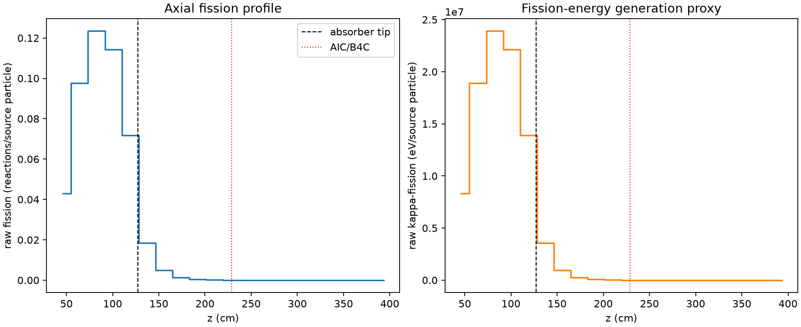
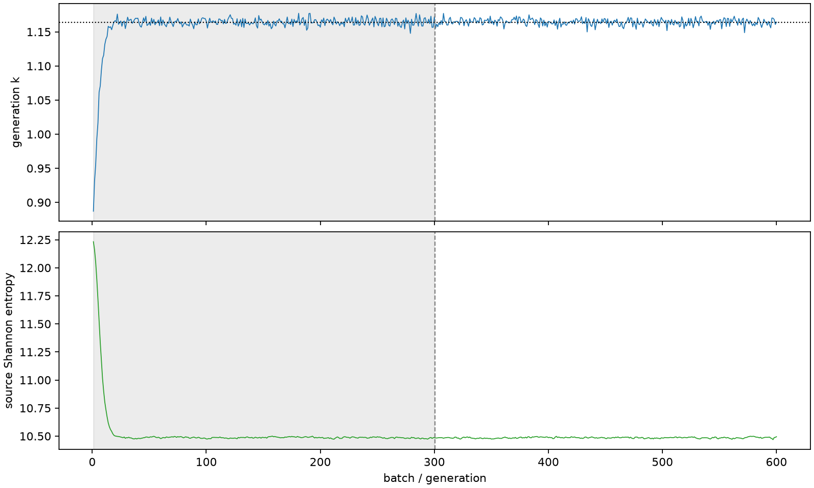

| field | value |
|---|---|
| experiment | V2-STAGE_128_OGRENCI_02-0016 |
| k | 1.164117453459399 |
| MC standard error | 0.00018347324973972236 |
| seconds | 922.9459185470005 |
| acceptance | not_assessed |
| convergence | review_required |
Completed is output integrity only; physical and statistical review required. Zero tallies do not prove zero production or zero uncertainty.
| diagnostic | value |
|---|---|
| geometric fuel voxels | 5280 |
| zero fission tally voxels | 1712 |
| low signal fuel voxels | 2653 |
| low signal fission share | 7.933693443296594e-05 |
| low signal kappa share | 7.93590230149899e-05 |
| important fission share | 0.9500353542003457 |
| previous filter included | 2627 |
| duration estimate s | 1562.5173488400023 |
| actual minus estimate s | -639.5714302930019 |
| fission relative MC error | statistics |
|---|---|
| all_geometric_fuel | {"voxels": 5280, "positive_mean_voxels": 3568, "zero_mean_voxels": 1712, "undefined_relative_error_voxels": 1712, "median": 0.025089416282225878, "p95": 0.9999999999999999, "maximum": 1.0000000000000002} |
| low_signal | {"voxels": 2653, "positive_mean_voxels": 941, "zero_mean_voxels": 1712, "undefined_relative_error_voxels": 1712, "median": 0.5803196487985776, "p95": 1.0, "maximum": 1.0000000000000002} |
| important_95pct | {"voxels": 1337, "positive_mean_voxels": 1337, "zero_mean_voxels": 0, "undefined_relative_error_voxels": 0, "median": 0.005737395182642762, "p95": 0.00890383412647873, "maximum": 0.013879893430722243} |
| outside_previous_filter | {"voxels": 2653, "positive_mean_voxels": 941, "zero_mean_voxels": 1712, "undefined_relative_error_voxels": 1712, "median": 0.5803196487985776, "p95": 1.0, "maximum": 1.0000000000000002} |
| kappa_fission relative MC error | statistics |
|---|---|
| all_geometric_fuel | {"voxels": 5280, "positive_mean_voxels": 3568, "zero_mean_voxels": 1712, "undefined_relative_error_voxels": 1712, "median": 0.025053188055514215, "p95": 0.9999999999999999, "maximum": 1.0000000000000002} |
| low_signal | {"voxels": 2653, "positive_mean_voxels": 941, "zero_mean_voxels": 1712, "undefined_relative_error_voxels": 1712, "median": 0.5794389117015224, "p95": 1.0, "maximum": 1.0000000000000002} |
| important_95pct | {"voxels": 1337, "positive_mean_voxels": 1337, "zero_mean_voxels": 0, "undefined_relative_error_voxels": 0, "median": 0.005731000831370887, "p95": 0.008893163894849222, "maximum": 0.013861372184687576} |
| outside_previous_filter | {"voxels": 2653, "positive_mean_voxels": 941, "zero_mean_voxels": 1712, "undefined_relative_error_voxels": 1712, "median": 0.5794389117015224, "p95": 1.0, "maximum": 1.0000000000000002} |
| axial bin | fission share | kappa-fission share |
|---|---|---|
| 1 | 0.09016245397145962 | 0.09016438119167547 |
| 2 | 0.20552085787694455 | 0.20551640329819695 |
| 3 | 0.2597230091881317 | 0.25971727151230595 |
| 4 | 0.2404997547270037 | 0.2404941600995913 |
| 5 | 0.15106439451566533 | 0.15106297936930596 |
| 6 | 0.038878150686304895 | 0.038889212535224205 |
| 7 | 0.01035920223355144 | 0.010362218946206791 |
| 8 | 0.002772961325096842 | 0.0027738417014485494 |
| 9 | 0.000737310872005705 | 0.0007375422908935199 |
| 10 | 0.0002125100980305472 | 0.00021257611567624516 |
| 11 | 5.621736673559261e-05 | 5.622914517121345e-05 |
| 12 | 1.1015192321732701e-05 | 1.1019148119470088e-05 |
| 13 | 1.9458268697859843e-06 | 1.94789185322519e-06 |
| 14 | 5.5487510260772595e-08 | 5.581591337245052e-08 |
| 15 | 1.6063236834492226e-07 | 1.609384177799023e-07 |
| 16 | 0.0 | 0.0 |
| 17 | 0.0 | 0.0 |
| 18 | 0.0 | 0.0 |
| 19 | 0.0 | 0.0 |
| 20 | 0.0 | 0.0 |
Histories include the inactive-to-active transition at batch 300. kappa-fission approximates fission energy production, not total heat deposition.

